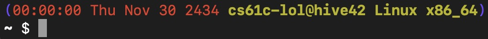

Lab 0: Intro and Setup
Deadline: Monday, January 24, 11:59:59 PM PT
Hello! Welcome to CS61C! We're excited to have you on board :D Please pay attention as we demonstrate the safety features of this aircraft.
This lab may be a little long, but please read carefully; it covers many important things that will prepare you for the rest of the course!
Goals
Each lab will begin with a few goals; use them to reflect on your learning and guide your thinking! Here are the goals for this lab:
- Describe and adhere to all course policies.
- Set up accounts for GitHub, Gradescope, hive machines, Piazza, and other course-related services.
- Get familiar with command line tools and Git commands.
Jargon
A quick clarification on some terms:
- TA/GSI/uGSI: Teaching Assistant (sometimes called Graduate/Undergraduate Student Instructor).
- AI: Academic Intern, also part of course staff. You'll see them in Lab, OH, and sometimes Piazza.
- In this course, AI generally stands for this, and not "artificial intelligence".
- OH: Office Hours, where you can meet course staff in (virtual) meetings and ask questions.
- hive/"hive machines"/"the hive": a group of instructional servers. More details later in the lab.
- CLI: Command Line Interface, or the interface you see in terminals
- GUI: Graphical User Interface
- OS: Operating System (commonly macOS, Windows, Linux, FreeBSD, etc.)
Exercise 1: Accessing Services
Unfortunately, assignments in this course do require some (sometimes boring) setup. Let's get that out of the way before the semester kicks in.
Note: If you were enrolled recently, it will take up to 24 hours to automatically get access to everything. If you're still having access issues after that, please reach out to us on Piazza, but please wait until 24 hours have passed before reaching out. You can contact us through Piazza (preferred) or email ([email protected]).
Accessing Services
61C primarily uses a couple services for distributing assignments, receiving work, and grading. There's a brief overview of the important ones in the sections below.
Note for students with internet access restrictions
Unfortunately, some regions and organizations block access to our educational materials and tools. If you're unable to access any services or resources due to internet access restrictions, you can download and use the Berkeley campus VPN (see the Berkeley Library VPN info page). If the campus VPN is inaccessible or doesn't work for you, contact us (Piazza preferably, if that's not accessible email cs61c [at] berkeley.edu) and we can try to work something out.
Note: Non-standard Enrollment
If you're enrolled in 61C normally, you should already be added to everything.
If you're resolving an incomplete and received an email this semester about it, you should also already be added to everything.
If you're a concurrent enrollment student, in CS 47C, or in some other non-standard enrollment for 61C, you might not be able to access some of the resources below. If that is the case, please fill out this form so we can add you.
CalNet ID (and Berkeley Google accounts)
Most students should have a CalNet ID (and therefore, email ending in @berkeley.edu).
- If a service allows CalNet ID login, use that whenever possible.
- If a service prompts you to sign in with Google, log in using your
@berkeley.eduemail if possible. This is your "Berkeley Google account" (or bConnected account, but nobody says that). - If you would like to use an existing account on a service, try to add your Berkeley email as the primary email.
Piazza
Piazza is a discussion forum that we'll be using as the main method of communication for this course. All announcements will be made here, and almost all questions or comments you may have should be posted here (unless we say otherwise).
We automatically add new students to the 61C Piazza course approximately every 24 hours.
Please take a moment to read through the Piazza section of our policies.
Gradescope
Gradescope is the platform we use for submitting and grading programming assignments.
We automatically add new students to the 61C Gradescope course approximately every 24 hours.
Warning: Please ensure you set your @berkeley.edu email as your primary email. If not, we might not be able to find your Gradescope account for grading!
PrairieLearn
PrairieLearn is the platform we use for homework and quizzes.
Visit PrairieLearn and make sure you can see the 61C Spring 2022 course. If not, try the Add or remove courses button. Please reach out on Piazza if you're still not able to see the PrairieLearn course.
Warning: Please access Berkeley's PrairieLearn instance through the link above! If you search PrairieLearn on the web, the first result will probably be UIUC's instance.
GitHub
GitHub is a hosted Git service we use for code distribution.
If you have an existing GitHub account, feel free to use that; we don't care, repositories created in this course are private, and anything you do for this course shouldn't affect the rest of your GitHub account. Note that course staff can see your GitHub username.
If you don't have a GitHub account or want to make a separate one for 61C, you can sign up at GitHub.
OH Queue
Office Hours (OH) will be scheduled and managed through the OH Queue. Please use your Berkeley Google account when logging in; non-Berkeley Google accounts will not be able to use the OH Queue properly.
Please take a moment to read through the Office Hours section of our policies.
When the queue is open, there will be a form to request help. When your help ticket is called by course staff:
- If you are in-person, course staff will call out your name in the room. Wave at them, and they'll come over to you.
- If you are remote, a
Join Callbutton will appear. Clicking that will take you to a Zoom room with a staff member.
YouTube & Kaltura
Recordings of discussions and lectures, as well as other video resources, will be uploaded to YouTube or Kaltura.
Kaltura: Under the bCourses site for this course, there is a Media Gallery page. Kaltura uploads will be visible here.
YouTube: YouTube uploads will be linked on the course website. You will need to be signed into YouTube using your Berkeley Google account to view our YouTube uploads. If you're unable to view a video on YouTube, make sure you're using your Berkeley Google account (click your avatar on the top-right corner and Switch Accounts, or try the YouTube Channel Switcher page).
Note: If you can't view the videos on YouTube, usually:
- You might be using a personal Google account on YouTube.
- You might be using your Berkeley Google account, but you have 2 or more YouTube channels on that account.
If you see a "More accounts" button when switching accounts, try that. If not, try the channel switcher, or try a private browsing/incognito window.
Zoom
We will be holding remote meetings (lab/project/general OH, lectures, discussions, etc.) through Zoom. When signing in, use the Sign in with SSO option, enter berkeley.zoom.us, and sign in with your CalNet ID.
Note: If you get an error saying "Unable to sign up with your email address" or "Cannot sign up with email address ending with @berkeley.edu", make sure you are using "Sign in with SSO" and not another method to sign in.
Relevant Zoom links can be found in the Zoom Links post on Piazza.
Instructional Accounts and Servers (the hive!)
The EECS department has several instructional computer labs in Soda 271, 273, 275, 277, and 330. Most of the software we'll be using is already pre-installed on these computers, so you use these to work on assignments. As a student in a CS course, you should have 24/7 cardkey access to the labs.
The department also has instructional servers that are accessible remotely, using SSH (more on that later in this lab). Later in the semester, we may have assignments that must be completed on "hive machines", which are the main group of instructional servers we'll be using. You can find a list of hive machines at Hivemind (only the names starting with hive).
You will need to sign up for a cs61c instructional account on WebAccount. You'll use this account to access the instructional computers.
Note: If you can't create an account for whatever reason, don't worry! See the Non-standard Enrollment section, and continue without an account for now.
Action Items
- Sign up for and log into all the services described above.
- Piazza: Make sure you can access the course Piazza.
- GitHub: Make sure you can log into the GitHub account you plan to use for this course.
- Gradescope: Make sure you can log in and see the
Spring 2022version of theCS 61Ccourse. - PrairieLearn: Make sure you can log in and see the
Spring 2022version of theCS 61Ccourse. - OH Queue: Make sure you can log in without errors.
- YouTube: Make sure that you can view the lecture 1 video (linked on the home page). If it's not uploaded yet, you can come back to this later.
- Zoom: Follow the login instructions in the Zoom section above. Make sure you can join the various OH rooms.
- Instructional Account: If you haven't already, visit WebAccount and create a
cs61cinstructional account
Exercise 2: Command Line Essentials
If you took CS61A and CS61B, you likely have some experience with a command line interface (CLI) and terminal commands. We'll be using the CLI a lot in this course, so let's take a moment to review some of the basics.
Example commands will be formatted like:
In this case, echo is the command, and Hello and world are arguments. Typing that line in your terminal will run the command. In this case, it just prints Hello world to your terminal.
Flags are commonly used to specify program options or alter behavior. They usually begin with one or two dashes, and can optionally take an argument.
|
It's generally recommended to wrap strings that should be a single argument in single quotation marks (e.g. 'longer string with *&)[email protected]#(&$! symbols'), or you may run into unintended behavior -- many of those symbols actually do something if left unquoted/unescaped!
You may find it helpful to review 61B's list of common CLI commands.
CLI Keyboard Shortcuts
When typing commands or file paths:
- Tab will try autocomplete the current term based on what you wrote so far
- If the current directory has
filename1.txtandfilename2.txt, f Tab 1 Tab will result infilenameafter the first tab, andfilename1.txtafter you type1and the second tab
- If the current directory has
- Up Arrow and Down Arrow will allow you to move through commands you've used previously, so you don't need to type them again.
- Ctrl + a will move the cursor to the beginning of the current line (helpful for fixing mistakes)
- Ctrl + e will move the cursor to the end of the current line (also helpful for fixing mistakes)
- Ctrl + r will let you search through your recently used commands
Hello World
echo repeats whatever arguments you give it.
Working With Files
touch will create a blank file with the file name you provided.
This will create a file named example.txt with nothing inside.
If you'd like to create a file and add text in one go, you can use:
This will create a file with the name example.txt in your current directory. If the file already exists, it will be overwritten. The file will contain Your contents here, without the quotation marks. The > symbol takes one argument which redirects where data printed to stdout is sent. Here, we are redirecting the output of echo to a file named example.txt.
You can view the contents of a file with the cat or less commands.
cat print the contents of example.txt to your terminal. less opens a basic viewer which allows you to scroll and search.
File Paths
You can provide a relative or absolute path to point to files that are not in the current directory:
In relative paths, . refers to the current directory, and .. refers to the parent directory. Given a folder structure:
root-dir/
sub-dir-1/ (current directory)
file-1.txt
sub-dir-2/
file-2.txt
.refers tosub-dir-1, the current directory (e.g../file-1.txt)..refers toroot-dir, the parent directory (e.g.../sub-dir-2/file-2.txt).- To print
file-2.txt, you can runcat ../sub-dir-2/file-2.txt, orcd ../sub-dir-2thencat file-2.txt.
man - Manual Pages
The manual pages ("man pages") are great UNIX resources that are often underused; while not as versatile as Google, they contain documentation on UNIX components from program usage, language standards and conventions, and more. They also work offline, so they can be handy if you're ever stuck in a North Alaskan woodland cabin in the middle of a snowstorm basking in the dying glow of a ThinkPad which BTW runs Arch Linux.
While your favorite search engine probably also has the answers you're looking for, in this course, we'd still like you to get comfortable with using man, especially for C and UNIX-related questions.
If you want the man page for a single program/command, you can run:
|
The man page for a program typically contains information about what the program is used for, what certain flags do when you invoke the program with them, and where to go for more information. Since we piped the man page into less, this page is scrollable (use your arrow keys or the space bar). Hit q to exit the man page and get back to your terminal prompt.
|
The above command should bring up the man page for the echo command.
If you want to search the man pages for a command that pertains to a keyword:
|
This command will search the manual pages for a command with the keyword single_keyword. Forget how to open files in Vim? You can search for editor and get a list of all editor-related commands on your system.
ssh - "Secure Shell"
For this class, we'll expect you to test most of your projects, homeworks, and labs on the hive machines. To access the hive machines remotely, you'll be using the SSH protocol and programs.
Note: If you weren't able to get an instructional account, you can come back here later!
You can find a list of hive machines at Hivemind. There are 30 of them, named hive1, hive2, ..., hive30. If its name starts with hive, it is a hive machine. If it doesn't start with hive (sorry ashby), it's not a hive machine. Using a non-hive machine may lead to weird setup/runtime errors.
Sometimes, a hive machine may be down or overloaded. If you're getting "Connection refused" or "Connection timeout" or other connection errors, check Hivemind and pick another machine to use.
Once you have an instructional account, you can SSH into an instructional server with the following command:
Remember to replace cs61c-??? with your instructional account username, and hive# with a hive machine's name. Your default password is displayed by WebAccount when creating the account, and you can reset your password on WebAccount if you forgot it.
Troubleshooting:
- If nothing happens for a long time: check your internet connection. Some network firewalls, including
CalVisitoron campus, block SSH. Try another network (eduroamif you're on campus). Permission denied, please try again: if you're copy-pasting the password, try typing it out manually.Connection refusedor other weird errors: the hive machine you picked might be down. Try another oneReserved for cs61c staff: try another hive machine :)
When your connection succeeds, you should be able to interact with and run commands on your chosen hive machine! To exit this SSH session, simply run:
Files on the hive machines are stored on a network drive, so your account will have the same files on all 30 hive machines (and other instructional lab computers).
If you want to change your instructional account password, you can SSH into the update server:
Sanity Check
When you're in a SSH session, your prompt should look similar to this (the area inside, but not including, the red box):

If it looks very different (e.g. the prompt is white text instead of red and yellow text), try running /home/ff/cs61c/bin/fix-dotfiles.
If your prompt still looks very different, contact course staff on Piazza.
scp - "Secure Copy"
The scp program is used for copying files between computers using the SSH protocol.
Sometimes, you may want to get individual files or entire folders from the hive machines onto your
local system, or vice versa. You can do this by using scp:
To specify a remote source or destination, use [email protected]:path. To specify a local destination,
just use path. As an example:
Assuming my username is cs61c-???, the above command would connect to hive3 and copy
~/some-folder/example.txt on my instructional account to ~/Downloads/example.txt on my local
machine.
If I wanted to copy the other direction (from my local machine to a hive machine) I would use:
scp by default only works with files. To copy folders, you need to tell scp to "recursively" copy
the folder and all its contents, which you can do with the -r flag:
Pay attention to the slashes: writing some-folder will copy the folder itself and files inside, while some-folder/ will only copy the files inside.
Warning: Running scp on the hive machines (e.g. when you're in a SSH session) is usually not desired behavior. Running scp example.txt [email protected]:~/example.txt on a hive machine will copy example.txt to... the same place. You probably want to run it in a local terminal session!
Action Items
SSH into any hive machine. Then:
- If there is a prompt asking you to enter some information:
- Last name (family name)
- First name (given name) and any middle name(s)
- Student ID
- Email address: please use your Berkeley email
- Code name: just pick something random. Ignore the "posting grades" bit, we don't use this system for any grades
- If there wasn't a prompt, run
re-register. - Then, run
check-registerand make sure the information is correct. If something is wrong, runre-register.- The first email address shown must be your primary email on your Gradescope account.
Exercise 3: Installing Dependencies
We're going to be using a couple programs and tools, outlined below:
- CLI (command line interface)
gitfor distributing and managing codepython33.6+ for running various scriptsgcc7+ for compiling C programs (many assignments also supportclang/clang-gcc)java9+ for RISC-V simulation (Venus) and circuit simulation (Logisim)
- GUI (graphical user interface)
- A browser
- A terminal program
- Java 9+ for visual circuit simulation, and other interactive simulations
CLI: the hive machines provide a Linux environment with all CLI tools already pre-installed and set up. We strongly recommend that you use the hive for assignments that use CLI tools to avoid annoying setup issues (especially on Windows). If you must work locally, note that we may not be able to help with local setup issues.
GUI: You will have to run GUI programs locally (screen forwarding over SSH is difficult and buggy). However, there are less complexities and potential issues with the GUI programs than with the CLI programs.
OS-specific Setup
The following sub-sections contain information and tips for specific OSes. Pay attention to the OS name; commands for one OS may break things on another OS!
As noted above, please remember that we strongly recommend that you do most of your work on the hive machines. The staff may not be able to help you troubleshoot issues if you choose to use another machine.
Ubuntu Linux
Ubuntu 18.04+ has the required programs in the default APT repositories. The following command will install them automatically:
The built-in terminal can be used for CLI programs.
macOS
The built-in Terminal app can be used for CLI programs.
Recommended installation:
- Open the
Terminalapp - Install the Xcode Command Line Tools:
- If you do not have Python 3.6+ installed (
python3 --versionshould say3.6or higher):- Download and install the latest version of Python 3 (64-bit)
- If you do not have Java 9+ installed (
java -versionshould say1.9or higher):- Download an OpenJDK build (we recommend Java 17) from the Adoptium project
- We recommend the
.pkginstaller. - If you have an M1 CPU, you want the
aarch64version. If you have an Intel/AMD CPU, you want thex64version.
- We recommend the
- Open the
.pkginstaller and follow the instructions.
- Download an OpenJDK build (we recommend Java 17) from the Adoptium project
Notes:
- (C)GDB and Valgrind are difficult to get working on macOS. LLDB is available, but its syntax is somewhat different from GDB's.
- Most of our stuff that runs on Intel-based Apple computers should also run on M1-based computers. If it doesn't, try reaching out on Piazza.
Windows
This one is a bit tricky. Developing in C on Windows works better in Windows Subsystem for Linux (WSL), but GUI support in WSL is spotty. WSL by default has its own set of accounts and files, separate from your Windows user data.
Recommended installation:
- Install Windows Subsystem for Linux (WSL)
- WSL 1 or 2 works, but we have observed less issues with WSL 2
- We recommend Ubuntu 18.04, since that is the OS on the hive machines so the experience will be similar
- This should install a terminal called
Ubuntu Bashor similar. Note thatUbuntu BashandGit Bashare very different!
- Inside WSL (open
Ubuntu Bash) and run the following: - Still in WSL (
Ubuntu Bash), install the CLI programs: - Now, outside WSL (in regular Windows), download and install the latest version of Python 3 (64-bit)
- Make sure to select the "Add Python 3.x to PATH" option
- Still outside WSL, download and install Git Bash
- Make sure to select the "Use Windows' default console window" option instead of "Use MinTTY"
- Still outside WSL, download and install Microsoft OpenJDK (Java 17 is recommended)
- You can skip this if you have an existing install of Java 9+
Tips:
- With the recommended installation,
Ubuntu Bashis a terminal that runs inside WSL, andGit Bashis a terminal that runs outside WSL. Assignments involvinggccor RISC-V should be done in WSL, and assignments involving Logisim should be done outside WSL. - We don't support Powershell. If you're looking to run something in your Windows environment (outside of WSL), please use Git Bash instead.
- By default, you can access your Windows files from WSL, but not vice versa (e.g.
C:\Users\Herobrine\Documents\cs61con Windows is/mnt/c/Users/Herobrine/Documents/cs61cin WSL). We recommend that you work in a Windows user directory (likeDocumentsfrom the example) so you can swap between WSL and Windows. - On Windows (not WSL), Python 3 may not be installed as
python3. Try the following commands -- if you find a command that returns Python 3 (not Python 2), use that instead ofpython3for the rest of this lab and in future assignments:
Other OSes
If you're using another Linux distribution (Alpine/Arch/Asahi/Debian/Fedora/NixOS/etc.), most of our programs should run fine, but we don't have resources to test on distros other than Ubuntu. If you're having trouble, you can try reaching out on Piazza or visit OH, but please note that staff has limited experience with these.
If you use *BSD, HaikuOS, TempleOS, ToaruOS, or anything else, we unfortunately don't have the resources to support these platforms. If programs don't work, you can use the instructional computers (or other supported platforms).
Action Items
- To test your GUI environment, download Logisim here. Open a terminal in your GUI environment,
cdto the download location, and run the JAR:
If the Logisim GUI interface pops up, you're all set! We won't be using it further, so you can close Logisim after checking that it works. - To test your CLI environment, open a terminal in your CLI environment and run the following:
Make sure none of the commands throw errors! - If you're getting tired of reading, try taking a short break (Minesweeper, anyone?)
Exercise 4: Dev Environment Setup
Text Editors and IDEs
61C doesn't require any particular text editor or IDE. However, knowing how to use at least one CLI-based text editor will make it easy to perform quick edits. Two CLI editors available on the hive machines are:
- Nano: simple and beginner-friendly
- It provides a helpful list of commands at the bottom of the interface (the ^ means the Ctrl key)
nano file.txt
- Vim: more complex but powerful
- See the Vim Basics section of the Appendix
- Frequently memed for not providing obvious instructions on exiting Vim
vim file.txt
If you're also looking for a GUI text editor, many students like using Visual Studio Code (VSCode) (different from Visual Studio). We can't officially support VSCode since most of course staff isn't familiar with it, but it has some pretty helpful extensions, including a Remote SSH extension that allows you to edit files over SSH in VSCode itself, without needing a CLI editor or scp. If you're interested in the extension, wait until the end of this exercise before setting it up, since we'll be configuring SSH.
Before moving on, try familiarizing yourself with either Nano or Vim (or both). It helps to SSH into a hive machine and play with a few test files.
SSH Key Setup
You'll be using the hive machines a fair bit in this class. Setting up SSH keys will let you connect without needing to dig up your instructional account password. You can skip this sub-section if you really want to, but we highly recommend doing this -- it saves a lot of time!
- On your local machine, check if you have existing keys:
If not, generate a key pair:
- When prompted for a key file path, just press Enter without typing anything else to use the default path.
- You'll be asked to set an optional key password. You can set a password if you want the extra security, but note that you'll have to enter it every time you use the key (every time you use SSH)
- To avoid setting a password, just press Enter without typing anything else.
- Then, copy your public key to your instructional account:
Remember to replace cs61c-??? with your instructional account username.
- Try SSH-ing into any hive machine now:
If you didn't set a key password, that should connect without asking for any passwords!
Hive SSH Configuration
We can configure a SSH host alias, which will let us use ssh hive# instead of ssh [email protected]#.cs.berkeley.edu. Open up ~/.ssh/config in a text editor (e.g. nano ~/.ssh/config) and add the following host entry:
# Begin CS61C hive machine config
Host hive? hive??
HostName %h.cs.berkeley.edu
Port 22
User cs61c-???
IdentityFile ~/.ssh/id_ed25519
ServerAliveInterval 60
# End CS61C hive machine config
Make sure to replace cs61c-??? with your instructional account username, but leave all the other symbols as-is.
Try SSH-ing into any hive machine now:
GitHub SSH Auth Setup
You can configure GitHub to your SSH key that you created above.
- On your local machine, print your public key:
It should look similar to the following (length may differ):
ssh-ed25519 AAAAC3NzaC1lZDI1N6jpH3Bnbebi7Xz7wMr20LxZCKi3U8UQTE5AAAAIBTc2HwlbOi8T [email protected]
- Go to GitHub => Settings => SSH and GPG Keys => New SSH key and add your public key. The title is optional, but it's helpful to set it to something that helps you remember what device the key is on.
- Try authenticating to GitHub over SSH:
If all went well, you should see something like:
Hi USERNAME! You've successfully authenticated, but GitHub does not provide shell access.
- SSH into a hive machine and generate a key pair (refer to step 1 of the SSH Key Setup section for more details):
Then repeat steps 1-3 on the hive machine.
In the future, when cloning repos that require authentication (e.g. the private labs repo you'll create next), instead of using the HTTPS repo URL (like https://github.com/USERNAME/REPO_NAME.git), you must use the SSH repo URL instead (like [email protected]:USERNAME/REPO_NAME.git). For example, in https://github.com/61c-student/sp22-lab-ghost.git, the repo named sp22-lab-ghost is under the 61c-student user/organization, so the SSH clone URL would be [email protected]:61c-student/sp22-lab-ghost.git.
Exercise 5: Fun with Git
In this exercise, you'll get your labs Git repository ("repo"), use Vim, and work with a variety of Git commands. By the end of it, you should feel comfortable using SSH, editing files, pulling/committing/pushing, and resolving merge conflicts. If you'd like to review your Git commands before beginning, you can check out this guide.
Getting Your Lab Repo
Visit Galloc. Log in, connect your GitHub account, and start the lab assignment. A GitHub repo will be created for you -- this will be your personal repo for any lab work you do throughout the semester.
Configuring Git
Before we start, let's tell Git who you are. This information will be used to sign and log your commits. You may not need to do this if you've set up Git before, but if you're on the hive machines it's likely a step you'll need to take.
First, run the following commands on your local machine (make sure to change the name and email to match your information):
If you have an instructional account, SSH into a hive machine, and run the same commands.
Cloning Your Repo
Git has the concept of "local" and "remote" repositories. A local repo is located wherever your terminal session is; if you're in a SSH session, the local repo is a folder on a hive machine; if your terminal session on your local machine, the local repo is located on your local machine's filesystem. A remote repo (e.g. GitHub repo) is typically hosted on the Internet.
You have a lab repository on GitHub, but not locally (it would be a little worrying if a website could automatically access your local files). To get a local copy of this repository, you can use git clone, which will create a local repository based on information from a remote repo.
If you have an instructional account, SSH into a hive machine. On the hive machine, clone the repository into a folder named labs:
Remember to replace sp22-lab-USERNAME with your actual repo name!
If you don't have an instructional account, you can perform the above command on your local machine, and work on your local machine for this exercise.
Exploring Your Repo
cd into this new folder. List all hidden files (ls -a). Do you see a hidden file/folder?
There is indeed a folder named .git. Its presence indicates that the current folder (folder containing .git) holds a Git repository.
Take a look at your repo's current remotes and status:
git clone has already worked a bit of magic here -- there's a remote called origin, and its URL points to your labs repo on GitHub! You're on a local branch called main, which is "tracking" origin/main (the main branch on the origin remote).
Note: GitHub now uses main as the default branch name, not master
Throughout the semester, course staff may make updates to starter code to fix bugs or release new labs. To receive these updates, you'll need to add another remote.
Note: Our starter repos are public, and you don't have write access to them, so you should actually use the unauthenticated HTTPS clone URL in this case!
If you ever want to pull updated starter code, you'd execute the following command:
Try it out now! Since you just started lab, there might not be any updates to pull yet.
Fizzing and Buzzing
If you started working on other labs, make sure to copy your work somewhere else before starting this exercise, since your work may be overwritten in this exercise.
cdinto thelab00folder in your repo, and take a look at the files present (ls). Then, run the following command to initialize the lab:
Make sure that no errors are printed.
-
Use Vim to open up
code.pyand look through thefizzbuzz(num)function. It should:- Print
"num: fizz"if num is a multiple of 3 - Print
"num: buzz"if num is a multiple of 5 - Print nothing if the num is not a multiple of 3 or 5
However, if you run the program (
python3 code.py), that doesn't seem to happen! Try to fix this bug by only editing theifandelifstatements. After fixing the code, save, add, and commit your work usinggit addandgit commit.In many environments,
git commitwill open up Vim for editing the commit message. If you're confused on how to use it, check out the Vim Basics section of the Appendix. - Print
-
After committing your fix, push your work.
Or at least, try to push your work. You should encounter an error:
! [rejected] main -> main (non-fast-forward) error: failed to push some refs to 'github.com:61c-student/sp22-lab-username.git' hint: Updates were rejected because the tip of your current branch is behind hint: its remote counterpart. Integrate the remote changes (e.g. hint: 'git pull ...') before pushing again. hint: See the 'Note about fast-forwards' in 'git push --help' for details.If you didn't encounter an error, try starting from step 1 again, or contact course staff if it keeps happening.
Throughout the semester, you'll probably run into many strange errors. It helps to break them down into smaller chunks, and see if you can find out what each chunk is saying. As an example, let's break that down:
"failed to push some refs to REPO_URL": the push failed"the tip of your current branch is behind its remote counterpart": the remote repo (on GitHub) has commits that your local repo doesn't"Integrate the remote changes (e.g. 'git pull ...') before pushing again": we need to tell Git how to integrate the mysterious commits
Try pulling the remote changes with
git pull. If you get a"fatal: Not possible to fast-forward, aborting", trygit pull --ff. You should encounter another error:Auto-merging lab00/code.py CONFLICT (content): Merge conflict in lab00/code.py Automatic merge failed; fix conflicts and then commit the result.Uh oh, a merge conflict:
"Merge conflict in lab00/code.py": both the remote repo and local repo have commits that made changes tolab00/code.py"Automatic merge failed": Git tried to figure out how to integrate the commits, but couldn't"fix conflicts and then commit the result": Looks like we need to manually resolve the merge conflict!
You can check
git status:On branch main Your branch and 'origin/main' have diverged, and have 1 and 1 different commits each, respectively. (use "git pull" to merge the remote branch into yours) You have unmerged paths. (fix conflicts and run "git commit") (use "git merge --abort" to abort the merge) Unmerged paths: (use "git add <file>..." to mark resolution) both modified: code.pyOpen the conflicted file in Vim. You should see something like:
<<< === >>> --It looks like your imaginary partner, Oski, also tried to fix the bug, without telling you. Dangit Oski! Oski's code seems rather... inefficient, so you want to keep your fix. However, Oski did do something useful: there's another
ifcase, so multiples of 15 will print 1 line with "fizzbuzz" rather than 2 lines with "fizz" and "buzz". In other words, Oski and you have both made changes you would like to keep!Now, with that in mind, fix the
fizzbuzz(num)function by integrating both versions into one, and then removing extra merge conflict markers (<<< HEAD,===,>>> commit-hash). The fixed function should look something like the following pseudocode:# print num: fizzbuzz # print num: fizz # print num: buzzWhen you're done, save, add, and commit your work. Now, if you push, there shouldn't be a conflict anymore. One merge conflict defeated!
-
On your local machine,
cdinto thelab00folder if you're not there already. Then, run the following command:This creates a file named
debug.txtthat records a bit of debugging information for the autograder. Add, commit, and push this file.
Submission
You made it! That was quite a bit of reading and head-scratching, but you're now somewhat more familiar with the tools you'll be using for the rest of the semester. Worth it!
Please check that you (and your partner, if you have one) have:
- Registered for the services from Exercise 1.
- Registered and checked your information on the hive in Exercise 2.
- Installed the dependencies from Exercise 3.
- Set up your development environment in Exercise 4.
- Completed the Git exercise in Exercise 5.
Note: the autograder will be released around Thursday evening.
Every lab will have autograded exercise(s). To submit to the autograder, you'll need to push your work to your lab repository on GitHub. Then go to the corresponding assignment on Gradescope (Lab 0 for this lab), select your lab repository, and submit. After a short wait, the page should show your autograder score for the lab.
Remember, to get credit for a lab, make sure you have finished all the exercises and passed all the autograder tests by 11:59:59 PM PT!
Appendix
These are some tools you may find helpful, but are by no means required for this course :)
Vim Basics
vim is a text editor included on the hive machines and many UNIX-based distributions.
Note: We'll be using Vim in most of our examples and documentation, but we have no hard requirement on which text editor you use; you're welcome to pick whatever you're comfortable with, but you should know how to use at least one terminal-based text editor.
To open a file from your current directory, pass the file name to Vim:
To open a file from another directory, use a relative or absolute path:
Some useful Vim commands:
| Command | Explanation |
|---|---|
Esc :q | Closes (quits) Vim without saving |
Esc :wq | Closes Vim after saving |
Esc :w | Saves your file |
Esc :q! | Force-quit Vim (for when you've made changes but do not wish to save them) |
Esc i | Insert mode, allows you to type into the file |
Esc /cats | Searches your file for the nearest occurrence of the string "cats". Press n to go to the next occurrence or N to go to the previous |
Esc :set nu | Shows line numbers within your file |
Note: these commands are preceded by Esc because you'll need to press the escape key on your
keyboard to switch you out of your current mode. For example, if I'm inserting (typing) into a file
and want to save, I'd have to hit Esc to get out of insert mode, then type :w to save my
file. If you aren't in a mode (i.e. you've just opened your file) you don't need to hit escape
first, but it won't hurt :)
By default, Vim doesn't enable mouse support or line numbers. If you want these:
- Open up
~/.vimrc(vim ~/.vimrc) - To enable your mouse, add a new line containing
set mouse=a - To enable line numbers, add a new line containing
set number - Save and quit. Try opening your vimrc file again
Vim has many more configuration options available -- feel free to experiment with Vim resources you find online!
We also have a Vim for CS61C guide that you can reference. Thanks Yijie!
GitHub Personal Access Token Setup
You probably won't need this, but GitHub's Personal Access Tokens (PATs) are an alternate way of authenticating to GitHub on the CLI.
- Go to GitHub => Developer Settings => Personal access tokens => Generate new token and generate a token. You must select the entire
reposcope for private repo access, but the other scopes are optional and should be left off if you'll only use this token for 61C. - Save the token somewhere secure, as GitHub won't show it to you again.
In the future, when cloning repos from GitHub, you should enter this token when prompted for your GitHub password.